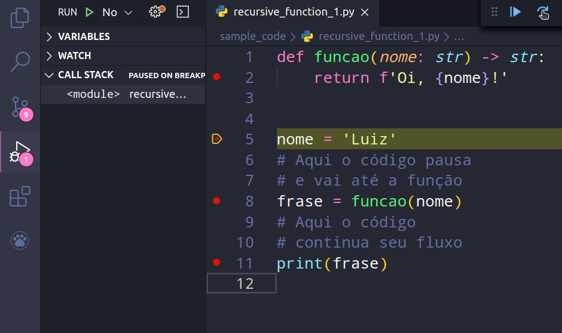
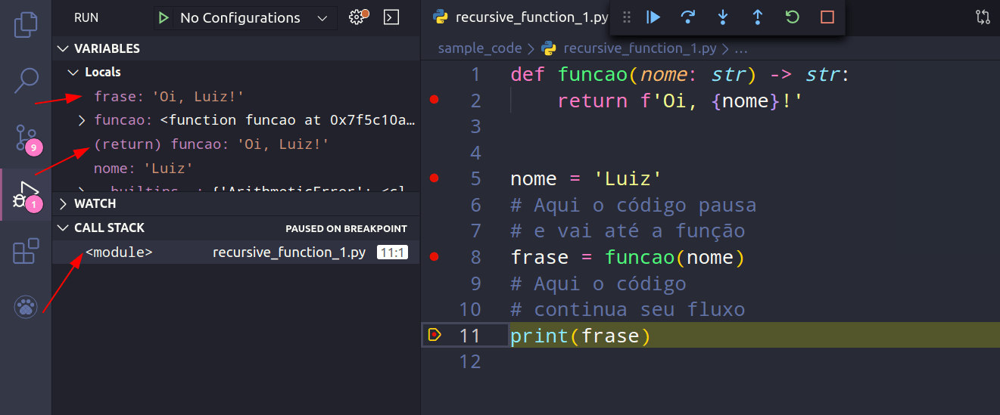
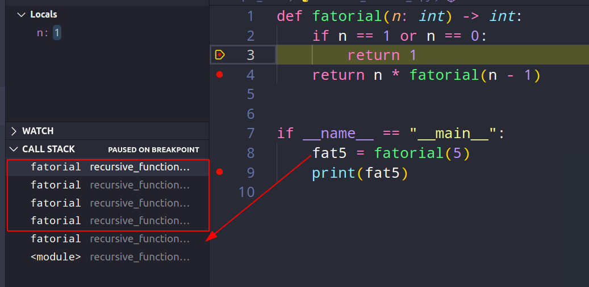
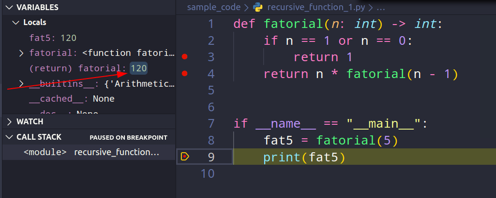

Funções recursivas com Python
Funções recursivas com Python (ou qualquer linguagem de programação) são funções que chamam a si mesmas de maneira direta ou indireta. Infelizmente, não há nenhum benefício em termos de desempenho ao usar funções recursivas em Python, já que laços podem resolver o problema com mais eficiência. Porém, funções recursivas podem ser mais intuitivas para o programador quando um problema pode ser dividido em problemas menores de mesmo tipo.
Considere o conceito de fatorial da matemática: o fatorial de um número é calculado pela multiplicação desse número por todos os seus antecessores até chegar ao número 1.
Esse é um problema extremamente simples para ser resolvido com recursão por dois fatores:
- É um problema que pode ser dividido em sub-problemas menores e de mesmo tipo (multiplicar um número pelos seus antecessores)
- Temos um caso-base para parar a recursão, retornar um valor real e resolver as equações (quando chegarmos em 1)
def fatorial(n: int) -> int:
if n == 1 or n == 0:
return 1
return n * fatorial(n - 1)
if __name__ == "__main__":
fat5 = fatorial(5)
print(fat5)O resultado da execução da função acima será 120.
# 5 * 4 * 3 * 2 * 1 = 120
Observação: você poderia escrever
uma condição mais concisa eliminando o
or da expressão com “if n < 2” ao invés de “if n == 1 or n == 0“.
Caso-base e caso recursivo
É muito fácil escrever uma função recursiva incorretamente e cair em uma recursão infinita. Veja isso no código a seguir:
def recursao_infinita(numero: int = 100) -> int:
return recursao_infinita(numero - 1)
if __name__ == "__main__":
recursao_infinita()O Python não vai permitir que este código execute infinitamente, então você deverá ver uma exceção:
# RecursionError: maximum recursion depth exceededIsso ocorre porque nunca dissemos para a função quando parar a recursão, mais especificamente, não adicionamos um caso-base na função.
Toda função recursiva é composta de, pelo menos, duas partes: caso-base e caso recursivo. O caso-base é quando a função NÃO chama a si mesma, mas retorna um valor real; já o caso recursivo, como o próprio nome indica, é onde a recursividade ocorre (a função chama a si mesma).
Veja uma nova função recursiva, porém com ambos os casos: caso-base e caso recursivo.
def contagem_regressiva_recursiva(comeca_em: int = 10, termina_em: int = 0) -> int:
"""
Contagem regressiva iniciando em 'comeca_em' e terminando em 'termina_em'
"""
print(comeca_em)
# Caso-base
if comeca_em <= termina_em:
# Perceba que aqui um valor real é retornado
# e não há mais recursão
return comeca_em
# Caso recursivo
# Esse código será executado sempre, até
# 'comeca_em' se tornar menor ou igual a 'termina_em'
return contagem_regressiva_recursiva(comeca_em - 1)
if __name__ == "__main__":
contagem_regressiva_recursiva()Call stack
Sempre que invocamos uma função, dados do seu escopo interno (como variáveis e parâmetros) precisam ser salvos em algum local. Além disso, também precisamos saber quando a função retorna um valor para que o programa continue a seguir o seu fluxo. Tudo isso é gerenciado pela Call Stack (pilha de chamada ou pilha de execução).
Como funciona a Call Stack
De forma simples e direta, funciona assim: quando meu programa está em execução e encontra uma chamada de função, ele pausa temporariamente o que estava fazendo e vai até o código interno da função para realizar sua execução. Após a execução, a função precisa saber como retornar o programa para o local onde ele parou antes da chamada para a execução. Então, após o retorno da função, o programa sabe como resumir o código partindo exatamente de onde a função retornou.
Exemplo de funcionamento da Call Stack
Veja um exemplo no gif abaixo como o fluxo do programa muda quando existe uma chamada para função:

No trecho simples de código acima, existe uma definição de função (linha 1), definição de variável (linha 5), uma chamada para função (linha 8) e em seguida um “print” em uma variável (linha 11). Eu marquei breakpoints nas linhas 2, 5, 8 e 11, mas não é essa a ordem de execução. Ao executar o programa, a ordem dos breakpoints não é a mesma. Ela é alterada para 5, 8, 2 e 11. Isso porque existe uma chamada para função na linha 8. Então enquanto o interpretador não conferir o que a função da linha 8 retorna, ele não tem como continuar a execução.
Além disso, perceba que, na lateral esquerda do gif, a
“Call Stack” está aberta. Nela, existe o que
está sendo executado no momento (stack frames). Nesse caso em
específico, começamos com o módulo que
está sendo executado (<module>). Tudo o que
estiver definido dentro do módulo, será exibido na Call
Stack dele. Porém, ao chamar a função, algo novo
é adicionado ali, a chamada para função
“funcao“. Isso ocorre após a
execução da linha 8 (chamada da função) e
termina após o retorno da função.
Locals
Vamos observar o que existe dentro da chamada de função (após a execução da linha 8).

Após a chamada para a função, a
execução do módulo é pausada
temporariamente até que o interpretador verifique o que a
função retorna. Nesse momento, ela é adicionada
na “Call Stack”, seus dados internos são salvos
até que ela decida retornar um valor. Perceba que o argumento
enviado ao parâmetro “nome” está
em “Variables” como locals dessa
função, essas são suas variáveis locais.
Assim que o retorno for concluído, a execução do módulo continuará a seguir seu fluxo e a chamada para a função será eliminada da “Call stack”.

Após o retorno da função, ela é eliminada
da Call Stack e o módulo pode prosseguir com sua
execução. Aliás, também preciso mencionar
que capturei o valor do seu retorno em uma variável
frase para fazer algo ela posteriormente (como dar um
simples print no terminal).
Então, podemos resumir que “Call Stack” é exatamente o que sua tradução descreve, uma pilha de chamadas. Assim como existe uma pilha de livros na prateleira, existe uma pilha de chamadas de funções no seu programa. Cada elemento na call stack contém os dados do momento em que a funções foram chamadas.
Funções dentro de funções
Assim como acontece com funções chamadas diretamente dentro de um módulo, também ocorre com funções chamadas dentro de outras funções. Nesse caso, a pilha de chamadas fica ainda maior, porque se existir outra chamada para função dentro de uma função existente, o interpretador também precisará checar o retorno dessa outra função.
Considere o mesmo código anterior, porém com uma chamada dentro da função já criada.

Agora os passos são um pouco diferentes. Mas, se você me acompanhou até aqui, não terá dificuldade nenhuma para entender o que ocorreu.
Lembra que eu te disse que quando há uma chamada de função, o interpretador precisa verificar o que essa chamada retorna? Então, não é diferente aqui!
Quando estamos dentro de uma funcao_um realizando uma
chamada para uma funcao_dois, o que ocorre é que a
funcao_um precisa pausar sua execução para
saber o que a funcao_dois retorna. Só após
isso, a funcao_um poderá continuar sua
execução normal.
Mas não termina aqui, isso tudo é registrado pela “Call Stack” (chamarei de pilha daqui em diante). Então, quanto mais chamadas de funções dentro de funções, mais coisas existem acontecendo na pilha.
No código da imagem anterior, temos uma chamada para função na linha 19, então sabemos que o interpretador vai conferir o retorno para essa chamada. Porém, ao acessar o código da função, o interpretador encontra uma nova chamada para função na linha 13, então ele também vai conferir o que essa outra função retorna.
Veja na imagem, que a pilha agora tem o seguinte:
nova_funcaofuncao_anterior<module>
Cada elemento na pilha tem suas próprias variáveis locais salvas em memória.
Portanto, para resolver essa pilha o interpretador precisa voltar
resolvendo todos os retornos de cima para baixo. Ou seja, o resultado
final será: retorno da nova_funcao + retorno da
funcao_anterior + continua executando o módulo.
Como a funcao_anterior retorna a
nova_funcao, o retorno final será o que a
nova_funcao retornar.
Funções recursivas com Python
As funções recursivas com Python ou com qualquer outra linguagem de programação, funcionam exatamente como outras funções, porém, ao chamarem a si mesmas dentro do seu código, a cada nova chamada um novo elemento é adicionado na pilha (Call Stack, lembra?) contendo as variáveis locais daquele ponto na execução.
Considere a função fatorial, que te mostrei mais acima nesse post:
def fatorial(n: int) -> int:
if n == 1 or n == 0:
return 1
return n * fatorial(n - 1)
if __name__ == "__main__":
fat5 = fatorial(5)
print(fat5)A chamada dessa função (iniciando na linha 8) desencadeará mais 4 chamadas para ela mesma (somando 5 no total) até atingir meu caso-base, que é quando n for igual a 1.

Essas chamadas ocorreram na seguinte ordem:
fatorial(5) * fatorial(4) * fatorial(3) * fatorial(2) * fatorial(1)
Isso tudo está na pilha de chamadas e agora o interpretador precisa voltar resolvendo todas as chamadas de cima para baixo (ou de trás pra frente).
Dessa maneira (vou mostrar apenas os retornos):
# 1 = 1
# 2 * 1 = 2
# 3 * 2 = 6
# 4 * 6 = 24
# 5 * 24 = 120O trecho descrito acima é exatamente como a pilha foi resolvida.

Perceba que após retornar todos os valores e a pilha terminar de ser resolvida, todas as chamadas e suas variáveis locais agora foram eliminadas da memória e temos apenas o valor de retorno de toda a pilha.
É assim que as Funções recursivas com Python (ou qualquer outra linguagem de programação) funcionam. Exatamente como descrito em todo este artigo.
Problemas que podemos encontrar com Funções recursivas
Como você pôde perceber no texto que seguiu, cada chamada para função dentro de uma função recursiva é adicionada à pilha (cada elemento na pilha, cujo retorno ainda não foi finalizado, é chamado de stack frame). Isso pode ser um problema quando temos muitas recursões ocorrendo dentro de um programa.
Imagine que eu peça o fatorial de 998, isso significa que a minha recursão ocorreria 997 vezes até atingir o caso base (somando 998 chamadas). Isso também significa que eu teria 998 elementos na minha pilha de chamadas (sem contar qualquer outra chamada para funções no módulo e a chamada do módulo em si). Talvez, se o custo de execução da função consumir muita memória, eu poderia esgotar os recursos do computador facilmente apenas chamando uma função recursiva.
Existe uma técnica chamada de Tail Call Optimization (ou Tail Recursion Elimination em casos recursivos) que resolveria este problema. Porém, Guido van Rossum, criador do Python, foi um contra a adição disso no Python alegando ser “Não Pythônico”.
I recently posted an entry in my Python History blog on the origins of Python’s functional features. A side remark about not supporting tail recursion elimination (TRE) immediately sparked several comments about what a pity it is that Python doesn’t do this, including links to recent blog entries by others trying to “prove” that TRE can be added to Python easily. So let me defend my position (which is that I don’t want TRE in the language). If you want a short answer, it’s simply unpythonic. Here’s the long answer.
Por Guido van Rossum, em 22/04/2009, em Neopythonic
Tradução Livre:
Recentemente, publiquei um post em meu blog Python History, sobre as origens dos recursos funcionais do Python. Uma observação simples sobre não suportar Tail Recursion Elimination (TRE) imediatamente provocou vários comentários sobre ser uma pena Python suportar isso, incluindo links para posts recentes de blogs de outros que tentaram “provar” que TRE pode ser adicionado ao Python facilmente. Então, deixe-me defender minha posição (que não quero TRE na linguagem). Se você quer uma resposta curta, simplesmente não é Pythônico. Aqui está a resposta longa.
Por Guido van Rossum, em 22/04/2009, em Neopythonic
Se o próprio criador do Python mencionou isso, não iremos discutir isso por aqui =).
RecursionError: maximum recursion depth exceeded in comparison
Esse erro apareceu pra você? Isso quer dizer que a pilha de elementos no seu call stack passou de 1000 (limite padrão em Python).
Você pode fazer três coisas para resolver este problema:
- Checar se você realmente queria fazer mais de 1000 chamadas recursivas. Geralmente, quando criamos funções recursivas incorretamente, são realizadas mais recursões do que gostaríamos;
-
Trocar por um laço
for. Como Python não tem Tail Recursion Elimination (pelo menos até o momento da escrita deste post), talvez você poderia reescrever o código usandoforou atéwhile; - Por fim, um hack (aumentar o limite de recursão).
Para aumentar o limite de recursão, use:
import sys
sys.setrecursionlimit(5000)
print(sys.getrecursionlimit()) # 5000O padrão são 1000 recursões, no trecho acima aumentei para 5000.
Algoritmos usando recursão
Como vimos anteriormente, o algoritmo mais clichê que é implementado com recursão, seria o fatorial, que vimos ao longo de todo o post. No entanto, há uma gama enorme de algoritmos que podem se beneficiar da recursão.
Eu não pretendo detalhar o que todos eles fazem (talvez fique pra um próximo post), mas seguem alguns:
Sequência Fibonacci
A Sequência Fibonacci pode se beneficiar da memoization (cache) de funções executadas anteriormente. O Python inclui lru_cache no módulo functools que serve justamente para isso.
Adaptação do Livro Estruturas de dados e algoritmos com JavaScript (por Loiane Groner)
Quicksort
Adaptação do Livro Entendendo Algoritmos (por Aditya Bhargava)
Um código personalizado
from typing import List
class Caixa:
def __init__(self, tem_chave=False) -> None:
self.tem_chave = tem_chave
def __repr__(self) -> str:
return f'Caixa({self.tem_chave})'
def encontra_chave(caixas: List[Caixa], index: int = 0) -> Caixa:
if len(caixas) <= index:
return Caixa()
caixa = caixas[index]
print(f'Procurando chave na caixa do índice {index} -> {caixa}')
if caixa.tem_chave:
return caixa
index += 1
return encontra_chave(caixas, index)
if __name__ == "__main__":
caixas: List[Caixa] = [
Caixa(True), Caixa(), Caixa(), Caixa(),
Caixa(), Caixa(), Caixa(), Caixa(),
Caixa(), Caixa(), Caixa(), Caixa(),
]
print(encontra_chave(caixas))Meu código mesmo.
Torre de Hanoi
Adaptação do Livro O melhor do JavaScript (Por Douglas Crockford)
# Torre de Hanói
def hanoi(disco: int, origem: str, auxiliar: str, destino: str) -> None:
if disco <= 0:
return
hanoi(disco - 1, origem, destino, auxiliar)
print(f'Movendo disco {disco} de {origem} para {destino}')
hanoi(disco - 1, auxiliar, origem, destino)
if __name__ == "__main__":
hanoi(3, 'Origem', 'Auxiliar', 'Destino')Adaptação do Livro O melhor do JavaScript (Por Douglas Crockford)
Em vídeo
Também criei um vídeo sobre este conteúdo em meu canal do Youtube, segue abaixo:
Link do vídeo no YouTube: https://youtu.be/0PwFwqiNfAI
Super resumo do resumo
Funções recursivas com Python (ou qualquer linguagem de programação) são funções que chamam a si mesmas de maneira direta ou indireta.